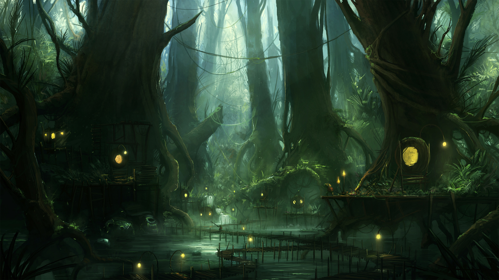
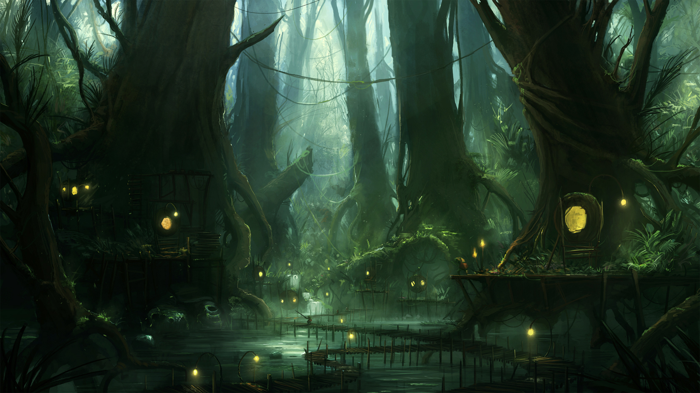

.png)
 



O mundo a ser descoberto
Bem-vindo a Eldoria, um vasto e inexplorado mundo que aguarda os destemidos jogadores prontos para desbravá-lo. Eldoria é um lugar de contrastes extremos e belezas imensas, onde cinco regiões distintas e desafiadoras se entrelaçam para formar um território cheio de mistérios e perigos.
O que você irá encontrar?
Cada uma dessas regiões oferece uma experiência única e um desafio imenso para os jogadores. Enquanto eles exploram e enfrentam os adversários que habitam Eldoria, serão recompensados com artefatos poderosos, tesouros inestimáveis e conhecimentos profundos que podem mudar o curso de suas aventuras. Em Eldoria, o espírito de exploração é testado a cada passo, e somente os mais corajosos e sagazes conseguirão desvendar todos os segredos deste mundo enigmático.
Terras Congeladas
O território das Terras Congeladas é uma região de tundra gelada e lagos congelados. Aqui, as condições extremas são um teste constante para a sobrevivência, com ventos cortantes e nevascas imprevisíveis. Os jogadores podem encontrar tribos nômades, bem como feras míticas como lobos de gelo e ursos polares, mas também há a promessa de riquezas escondidas sob o gelo e segredos das eras passadas.
Pântano Sombrio
O Pântano Sombrio é uma região de águas turvas e vegetação densa, onde o ar está sempre carregado com umidade e mistério. As criaturas do pântano são camufladas e traiçoeiras, como sapos venenosos e cobras gigantes. Entre os emaranhados de cipós e as águas infestadas, há segredos antigos e relíquias mágicas que podem ser descobertas por aqueles com coragem suficiente para enfrentar os perigos.
Arcanista Tempestuoso
O Arcanista Tempestuoso é um mestre da magia do trovão, canalizando o poder das tempestades e dos raios para dominar o campo de batalha. Dotado de uma profunda conexão com as forças atmosféricas, o Arcanista não apenas invoca relâmpagos devastadores, mas também manipula a eletricidade para criar defesas impenetráveis e acelerar seus movimentos.
Guerreiros de Adaga Cibernéticos
Os Guerreiros de Adaga Cibernéticos surgiram em um tempo onde a guerra urbana e a espionagem tecnológica se tornaram predominantes. Treinados em academias de combate de elite e aperfeiçoados por implantes cibernéticos, esses guerreiros são contratados por corporações, facções e governos para realizar operações de alta precisão e infiltração. Eles seguem um código de honra que valoriza a eficiência e a precisão, e suas tradições incluem a atualização constante de suas habilidades e equipamentos para manter a vantagem em um mundo de rápida evolução tecnológica.
Arcanista da Vida
O Arcanista da Vida é um mago profundamente conectado com as forças naturais e a essência da vida, especializado na cura e no reequilíbrio dos seres vivos. Em um mundo onde a harmonia da natureza e a saúde dos seres são cruciais, esse mago usa seu poder para curar feridas, purificar ambientes e restaurar o equilíbrio natural. Equipado com habilidades de cura e manipulação da flora, o Arcanista da Vida é um guardião da saúde e da vitalidade, tanto para aliados quanto para o ambiente.